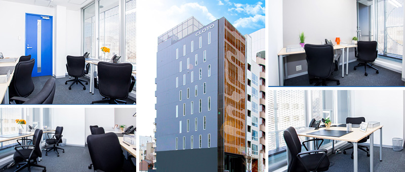
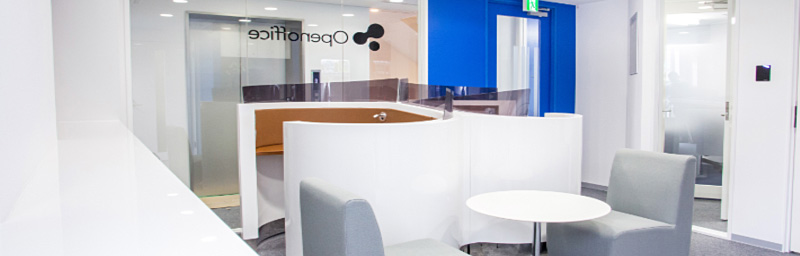

オフィス周辺のMap
大きな地図で見る

京都河原町御池のレンタルオフィス｜Openoffice：東京・大阪をはじめ全国に50拠点以上

京都河原町での起業や事業拡大だけではなく、京都本社・支社設立にも最適な環境です。
市役所に程近い利便性。
簡単に、リーズナブルな価格で、好きなときに使えるレンタルオフィス。 お気軽にお問い合わせください。

打ち合わせなどでも自由に使えるビジネスラウンジも完備
100Mbpsの光ファイバーによるブロードバンド環境をご用意しました。
ネットワークを利用して、各お部屋のパソコンから印刷できます。プリンタをご用意いただく必要もございません。
スキャナー機能も搭載しております。
フロア内にご用意してあります。カード方式でコピーが出来ますので、小銭の準備が不要です。
機密情報の破棄にご利用いただけます。
専用ICカードを使ったホテル式のスマートシステムを用いて、セキュリティーを向上させています。
24時間、荷物の受け取りが可能な宅配ロッカーを採用しています。
Wi-Fi完備。
ショートミーティングをしたい時、ちょっと気分を変えて仕事したい時、「使える」快適なフリースペースです。
京都市役所
ホテルリッツカールトン京都
京都ホテルオークラ
京都府京都市中京区河原町通二条下ル一之船入町376 クロトビル (旧 KMビル)
-京都地下鉄 京都市役所前駅より徒歩1分
-京阪三条駅から徒歩5分